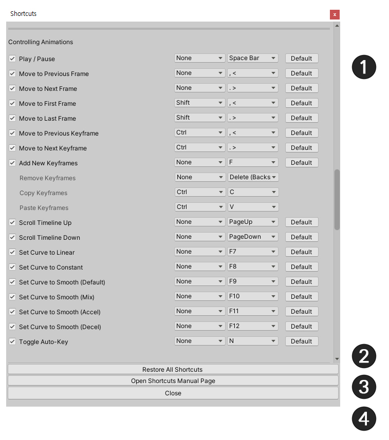
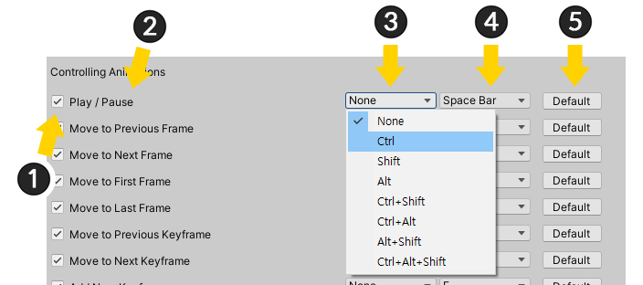
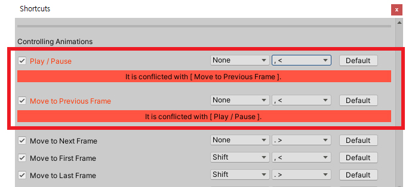

AnyPortrait > マニュアル > ショートカットの設定
ショートカットの設定
1.3.0
AnyPortraitエディタで使用されているショートカットキーを確認するか、または独自に合わせて変更しようとする必要があります。
このページでは、エディタで使用されているショートカットキーを確認して変更する方法について説明します。

(1) AnyPortraitエディタで、「設定ダイアログ」を開きます。
(2) 「Editorタブ」を選択します。
(3) 「Shortcuts Settingsボタン」を押します。

エディタで使用されているすべてのショートカットを見ることができます。

1. ショートカットのリスト : 機能のショートカットのリストです。
2. Restore All Shortcuts : ホットキーの設定をすべて初期化します。
3. Open Shortcuts Manual Page : ショートカットのリストを紹介するWebページを開きます。
4. Close : ダイアログを閉じます。

ホットキーの設定画面について説明します。
一部のショートカットは、修正ができません。
1. ショートカットキーを使用するかどうか : 無効にすると、そのショートカットは動作しません。
2. 機能名 : ショートカットキーに対応する機能の名前です。
3. 特殊キー : Ctrl、Alt、Shiftキーなどの特殊キーを設定することができます。一部の機能には、特殊なキーを設定することができないが、この場合には、特殊なキー入力するかどうかに関係なく動作します。
4. 入力キー : 入力キーです。
5. Defaultボタン : デフォルト設定に戻します。

もし入力キーが他のショートカットと同じであれば上記のような警告メッセージが表示されます。
重ならないように適切に設定してください。